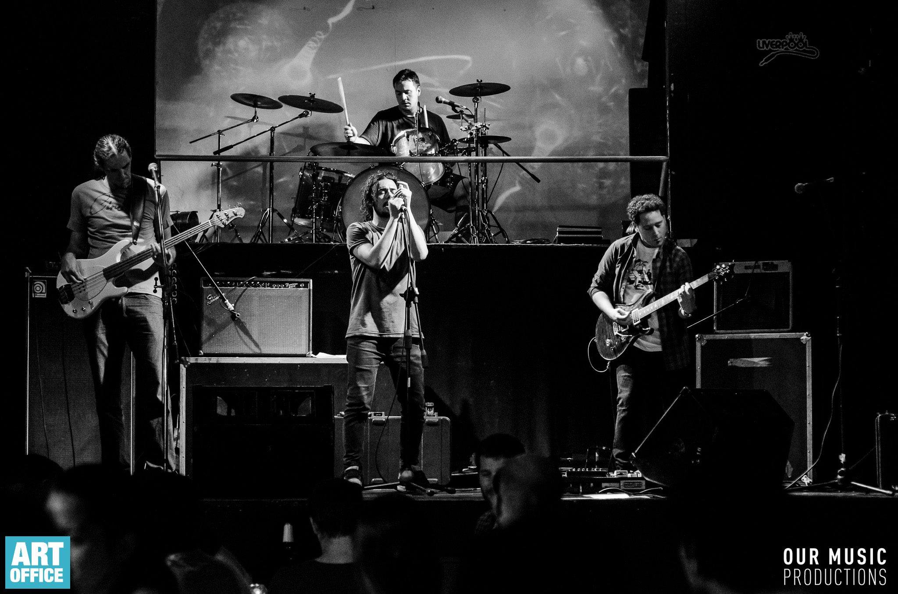

Mutantes se formó en el año 2005. Luego de varios años de intermitencias y cambios de bateristas, queda finalmente conformada por Lucas Perez en voz, Diego Calvente en guitarra, Alejandro Perez en bajo y Emmanuel Kurpas en batería y coros. Si bien todos los integrantes tienen muchos puntos en común musicalmente, las distintas influencias de cada miembro volcadas en el proyecto son las que terminan de determinar el particular estilo y sonido de Mutantes. Pizcas de Rock Alternativo y Funk-Rock son los condimentos más fuertes de la banda, aunque otros estilos a veces entran sutilmente en juego. A fines de agosto del 2016 Mutantes lanza el disco "Vivir de Mentira, Morir de Verdad", compuesto por 8 canciones, grabado en MCL Records y masterizado en Puro Mastering.
